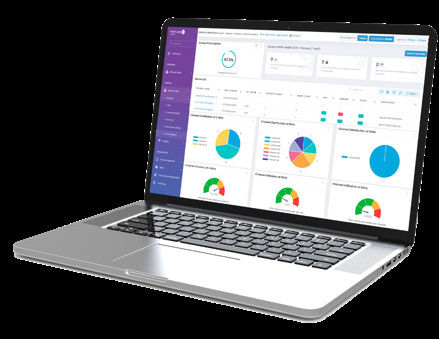

bp-ov2500-nms-datasheet

R（何时用）
- 客户要换网管平台，纠结云（Cirrus）还是本地（Terra）；MSP/多组织集中管理；政务/受监管行业数据不出境
- OV2500 / Cirrus 4 存量客户升级谈判（重配成本、迁移工具）
- 核对平台功能清单（NAC/QoE/热图/IoT/SPB/Open API）与设备版本门槛
- 报价时选订阅档位（Base/Business/Premium）、设备分档（APL/APH、Essential/Advanced）、Flexible Pay OPEX 条款与具体 SKU 号
- Terra 部署前虚拟机资源与虚拟化平台核对（≤5000 设备、ESXi 8）
I（核心理念）
- OmniVista 是 ALE 统一网管套件，双形态交付：
Cirrus（云端 SaaS，原生微服务、多租户/MSP、SOC1/SOC2 数据中心）与 Terra（本地部署，数据主权、≤5000 设备、Active-Active L2 高可用）（原文p9 ）。 - 两形态共享功能集：
内置 NAC 模块 UPAM（认证/角色/访客/BYOD）、QoE 指标、用户与网络行为分析、Rainbow CPaaS 实时告警（原文p9 ）。 - 选型逻辑代际×形态双轴（F1）：
上一代 = OV2500（本地）+ Cirrus 4（云）；新一代迁移设备基本免重配（原文p10 ）。
A1（选型/决策要点）
- 问行业与合规：数据不出境/本地安全合规 → Terra（原文p9 ）
- 问运营主体：MSP 或多组织 → 只能 Cirrus（Multi-tenancy 仅云版；Terra 只有 Multi-sites，原文p10 /原文p15 ）
- 问规模与资源：Terra ≤5000 设备、1-3 虚机（8vCPU/32GB/3TB 数据盘/台）；超限评估拆分（原文p15 ）
- 问存量设备：AP1101/AP1201H 被排除；交换机需 AOS ≥8.9R1；Stellar 15xx 需 AWOS ≥5.0.1MR（原文p15 ）
- 问付费偏好：OPEX 按月 → 只能 Cirrus Flexible Pay（12-60 月）；Terra 仅预付但多 7 年期（原文p16 ）
- 问服务档：Base 只保软件 → Business 加设备硬件维保 AVR → Premium 加最终客户直享支持（原文p16 /原文p17 ）
A2（规格细节速查表）
双形态对比
| 维度 | Cirrus（云） | Terra（本地） | 页码 |
|---|---|---|---|
| 定位 | 云 SaaS，原生微服务 | 数据主权/本地合规 | 原文p9 |
| 多租户/MSP | 支持（MSP→租户→站点层级，RBAC 按站点） | 仅 Multi-sites | 原文p10 /原文p15 |
| 规模上限 | 多区域数据中心弹性，单组织可到数千设备 | ≤5000 设备，1-3 虚机 | 原文p15 |
| 高可用 | 多区域数据中心+灾备 | Active-Active L2 | 原文p10 |
| 合规 | SOC1/SOC2、GDPR/CCPA、MFA | 本地自主 | 原文p10 /原文p15 |
| 固件升级 | 云推送 | 客户自访问 ALE 仓库 | 原文p16 |
| 订阅期限 | 1/3/5 年；另有 Flexible Pay | 1/3/5/7 年，仅预付 | 原文p16 |
Terra 虚机部署规格（原文p15 ）
- 虚拟化平台：
仅 VMware 与 Hyper-V；ESXi 最低版本 8 - 按设备数 1-3 台虚机扩展；每台推荐：
8 vCPU / 32 GB RAM / 系统盘 200 GB / 数据盘 3 TB - CPU 必须支持 AVX/AVX2 指令集，最低主频 3 GHz；磁盘必须 SSD/NVMe，读写 ≥50 MB/s
设备版本门槛（原文p15 ）
- Stellar AP 15xx 系列：
AWOS ≥5.0.1MR；AP 12xx/13xx/14xx/15xx 系列（AP1101、AP1201H 明确不支持） - 交换机：
AOS ≥8.9R1 - 浏览器：
Chrome ≥63 / Firefox ≥56 / Edge Chromium 110
订阅 SKU 全表（Ebuy 下单，预付模式）
Cirrus 预付（OVCX-*-BAS/BIZ/PRM-nY，n=1/3/5，原文p17 /原文p18 ） | SKU 模式 | 覆盖设备 | |---|---| | OVCX-APL-{BAS/BIZ/PRM}-nY | 低端 AP：AP1x0x / AP1x1x / AP1x2x | | OVCX-APH-{BAS/BIZ/PRM}-nY | 高端 AP：AP1x3x / AP1x4x / AP1x5x / AP1x6x / AP1x7x | | OVCX-63/64/65/68/69/99-{BAS/BIZ/PRM}-nY | 对应 OS63xx/64xx/65xx/68xx/69xx/99xx 系列 |
Terra 预付（OVTX-*-BAS/BIZ/PRM-nY，n=1/3/5/7，原文p19 /原文p20 /原文p21 ） | SKU 模式 | 覆盖设备 | |---|---| | OVTX-APL-{BAS/BIZ/PRM}-nY | 低端 AP（AP1x0x/x1x/x2x） | | OVTX-APH-{BAS/BIZ/PRM}-nY | 高端 AP（AP1x3x 及以上） | | OVTX-63/64/65/68/69/99-{BAS/BIZ/PRM}-nY | 对应 OS63xx-99xx 系列 |
Cirrus Flexible Pay（OPEX 月付，原文p19 ） | SKU | 覆盖设备 | 条款 | |---|---|---| | OVC-C-ESS-M（Essential） | 全部支持的 Stellar AP + OS6360/OS6465/OS6560/OS6570M（AOS 8） | 按月定价；期限 12-60 月；付款月/季/年/预付 | | OVC-C-ADV-M（Advanced） | OS6860/6860E/6860N/6860P/6865/6870/6900/9900（AOS 8） | 同上 |
服务档差异（原文p16 /原文p17 ）：Base = 软件更新+云支持入口（不含设备硬件维保与设备支持）；Business = +Partner Plus+设备维护 AVR；Premium = +End Customer 直享支持（含硬件维保/AVR/高级换新）。
平台关键功能索引
- 迁移工具随标准包（能力因源系统而异，原文p10 ）；UPAM 认证源：
RADIUS/AD/LDAP/Microsoft Entra AD，802.1x EAP-TTLS，访客门户支持 email/SMS/Facebook/Microsoft 365/Rainbow 社交登录（原文p11 ） - QoE 指标：
连接成功率/连接时长/漫游时间/覆盖/可用容量，直指 DHCP/DNS/认证类故障（原文p12 ）；热图（覆盖+密度）与客户端定位（原文p13 ） - 配置模型四类 Profile：
SSID / ARP / RF / AP-Group（组内 AP 全继承）；Golden Configuration 漂移审计（原文p14 ） - SPB Service Manager 与图形化 fabric 拓扑（原文p14 /原文p15 ）；DPI 应用级可视、纳管 Celona Private 5G 小站（原文p14 ）
- Open API（认证加密、开放稳定）、SAML 2.0 SSO（Okta/Azure AD）、RADsec、双栈 IPv4/IPv6（原文p14 /原文p15 ）
E（适用场景案例）
- MSP 管理多家客户网络 → 选 Cirrus（Multi-tenancy 仅云版，C1，原文p15 ）
- 政务/受监管行业数据不出境 → 选 Terra（C2，原文p9 ）
- campus 约 4000 台 AP+交换机全本地 → Terra 按 1-3 虚机规划（C3，原文p15 ）
- OV2500 客户怕重配 → "Minimal device reconfiguration"+迁移工具随标准包（C4，原文p10 ）
- 只要网管软件、硬件已有维保 → Base 档；打包硬件维保升 Business；最终客户直享支持升 Premium（C5，原文p16 /原文p17 ）
- 客户拒绝一次性预付 → Cirrus Flexible Pay（OVC-C-ESS-M/ADV-M，注意 Essential/Advanced 设备分档，C10，原文p19 ）
B（限制与订购坑）
- Terra 仅 VMware/Hyper-V、ESXi ≥8；KVM/Nutanix 不在列；磁盘必须 SSD/NVMe ≥50MB/s（X8，原文p15 ）
- AP1101 与 AP1201H 明确不支持新平台，存量需先换 AP（X5，原文p15 ）
- 交换机门槛 AOS 8.9R1（比 Network Advisor 的 8.7R2 更高），老版本先升级（X6，原文p15 ）
- Terra 无 Flexible Pay，只能预付；Terra 无云推送，升级需客户自访问 ALE 仓库（X9/X11，原文p16 ）
- Base 档不含设备硬件维保与设备支持；Flexible Pay 亦不含（硬件维保单卖）（X10/X12，原文p17 /原文p19 ）
- Flexible Pay 最短 12 个月，不支持短期（X13，原文p19 ）
- 迁移工具能力因源系统与版本而异，非全自动等价迁移（X14，原文p10 ）
来源：bp-nms-brochures · omnivista-network-management-datasheet-en.pdf（DID25052601EN，2026-01），p9-21